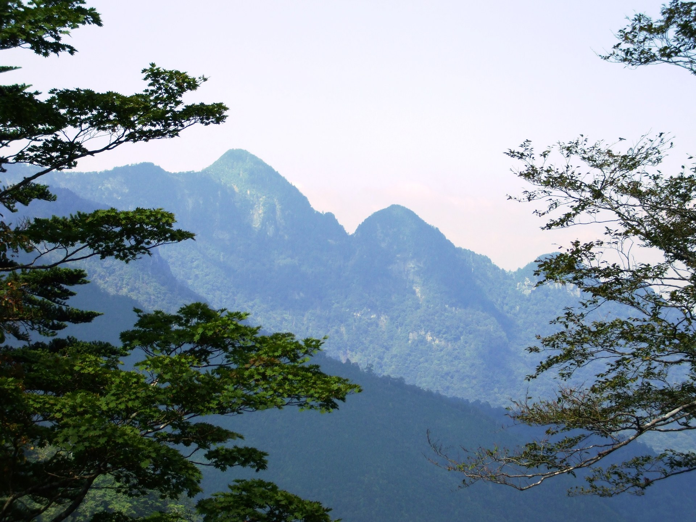
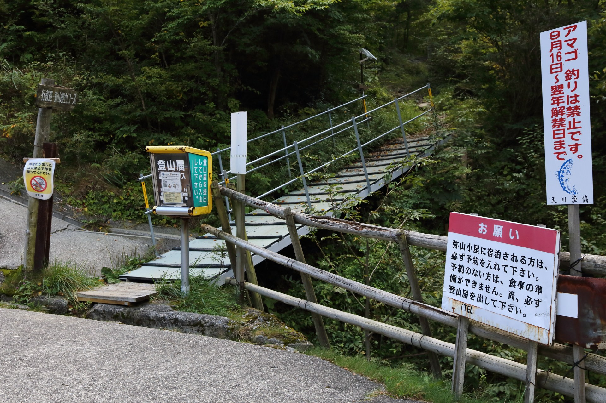
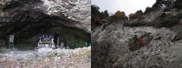
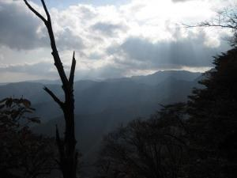

源流へ歩き、坐る
登頂だけを終点にせず、歩いては坐る。
水、風、岩、音、光を、五感で受け取る。
まずは、無理のない少人数の試行から。
大普賢岳の参考景観。実施地・決定コースを示すものではありません。

自分で、受け取る。
暮らす水の源をたどり、息や足元を感じ、ときに坐る。自分自身へ帰る時間にもなり得る、という対話から生まれた構想です。
感動や変化を求めず、言葉にならないままでもよい。ご住職の負担を増やさない関わり方を先に確かめ、大勢を集める前提にしません。
対話の要旨：音声15 13:48–14:43、29:12–30:20、16 08:00–10:54。負担・イベント化への慎重さは音声17 00:53–01:52（話者帰属推定）。医学的効能・成果を保証する説明ではありません。
既存の定例坐禅会とは別の検討企画です。映画出演や記録公開も自動で含まれません。「聖地」という捉え方は企画上の視点で、公的認定を意味しません。
奥の行場へ。三つの範囲を確かめる。
小屋に泊まり、山の雰囲気を味わいながら、さらに奥で歩いて坐る構想を中心に置きます。以下を一本の募集コースにはしません。所要時間・標高差・歩行距離・着地点は未確定。このページでは登山道の案内をしません。
| 検討範囲 | 確かめたいこと | 現在の位置づけ |
|---|---|---|
| 山上ヶ岳より先の山域・拠点候補 | ご住職が語る、さらに奥の行場で歩いて坐る構想。 | 音声15 10:30–13:35。未踏区間と地名の校正・下見が先。 |
| 和佐又・笙ノ窟周辺 | 岩壁・森・窟の場と、実施条件。 | 音声16の語との照合候補。ご住職の正式な指示地点とは未確認。 |
| 行者還トンネルを入口とする周辺 | 拠点とアクセス、山中で坐る場所の下見。 | 行者還トンネルは本人が明示。最終ルートと着地点は未決。 |
洞川周辺で短く試す案は、AIによる下見の補助案です。奥の行場へ向かい、泊まって山を味わう構想の代替にはしません。
入域条件は地点ごとに確認します。女性の参加可否を大峯全体へ一括適用しません。候補地の写真は、現在の通行可能性を示すものではありません。
同行する願いと、負担を増やさない条件。
一緒に山に登って感じる人を集めてほしい（音声15 24:20–24:24）。大勢を集めたイベントの負担は避け、自然な流れにしたい（音声17 00:58–01:28）。この二つを保ち、企画自体の拒否と読まず、規模と役割を相談するための条件にします。
ご住職が新たに担わなくてよい仕事として、一般募集の対応・個別申込の連絡・会計・参加者全員の写真撮影を提案します。誰かへ自動移管せず、担当と負担を決められる範囲で一回を作ります。
「山座禅／山坐禅」は対話に出た呼び名の候補です。この資料では便宜上「山坐禅」と表記し、正式名称・表記はご本人に確認します。

Gohachiyasu1214・Wikimedia Commons ／ CC BY-SA 4.0。Codexにより縮小・JPEG再圧縮。派生画像も同ライセンス。案内板を現在の規則の根拠にしません。
岩壁と山並みの参考資料


上の2点：出典 環境省近畿環境局「和佐又山【利用・施設】」（2010年11月2日撮影）。利用条件：PDL1.0。CodexによりRGB化・JPEG再圧縮。参考景観であり、今回の体験記録ではありません。
山に泊まり、歩いては坐る。
対話には、1泊2日〜2泊3日という聞き手の問いと、ご住職と思われる肯定があります（音声15 28:58–29:06、要旨・帰属推定）。小屋に泊まり山を味わう構想を残し、日数を予約条件にはしません。
実務・安全を担う関係者で先に下見をし、その後、顔の見えるご縁の中で同行を相談する案です。下見だけ日帰りにする選択肢は、本番の内容と別に検討します。
- 入る
- 歩く
- 坐る
- 受け取る
- 戻る
この順序は地点と時刻を決める前のAI設計案。人数・日数・体制は未合意です。
- 体調・装備・当日の状況を共有し、歩行と坐禅の参加を自分で選ぶ。
- 安全な場所で坐る。防風・保温と地面からの冷えも確認し、時間や姿勢、目を閉じるかは場所と状態を見て決める。
- 共有は任意。言葉や感動の強さで、体験を評価しない。
- 余力を残して戻り、続けたい部分と負担だった部分を分けて話す。
源流だから飲めるとは案内しません。飲水の安全は別途確認します。
実践と運営の役割を分ける。
ご住職は坐禅とご自身の実践を分かち合う人。山行全体の安全責任・集客・会計まで自動で担いません。薫ちゃんの調整と記録の稼働も見える形にし、山の実務と判断権は、担える人と別に確認します。
下見で確認すること
- 入口・出口、歩行負荷、通信できる地点、救急と連絡手段。
- 坐る場所の足場、落石・滑落、冷え、他の通行への影響。
- 宿泊施設・小屋の管理条件と営業、代替の有無。避難小屋を予約済み宿として案内しない。
- 天候による中止・短縮・撤退の基準と判断者。冬季実施を前提にしない。
- 入域条件、撮影しない時間、写真・録音・映画利用の用途別同意。
- 実費と労務対価、保険、費用の承認・負担者。既存会の参加費を流用しない。
資料の位置づけと参考情報
景観・候補地の理解のための資料です。リンク先は登山の参考情報を含みますが、この企画の安全確認や催行判断を代替しません。最新状況は実施前に確認します。
次の対話で、先に確かめる。
- ご住職が無理なく続けられる規模と関わり方は。
- 最初に一緒に下見したい場所は。
- 誰に、どんな条件なら声をかけたいでしょうか。